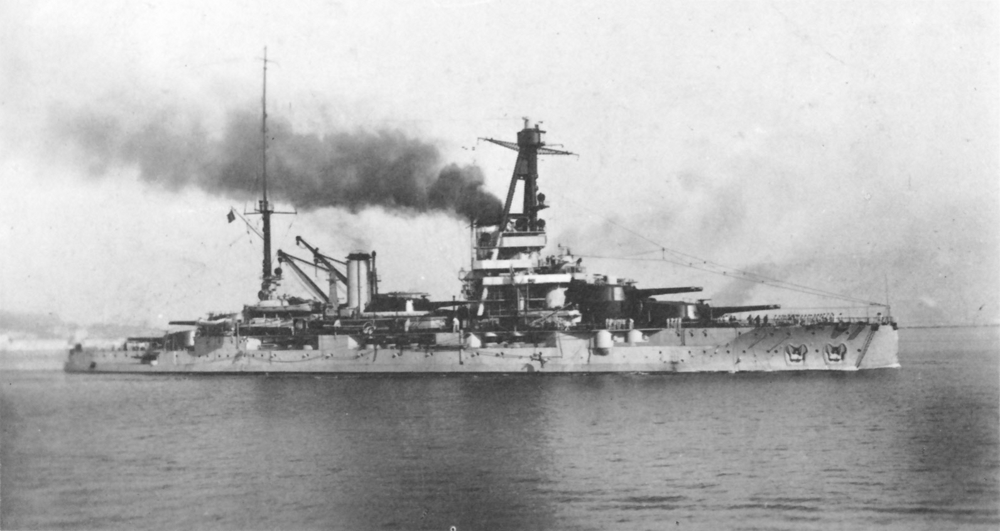
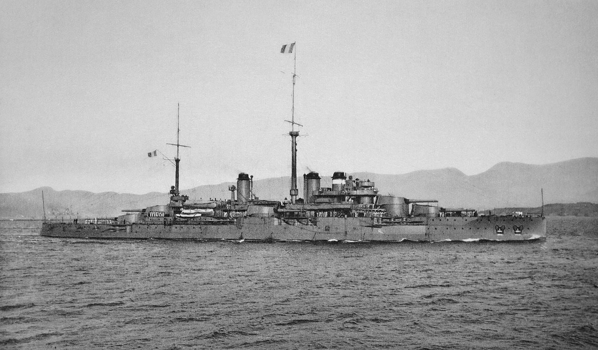
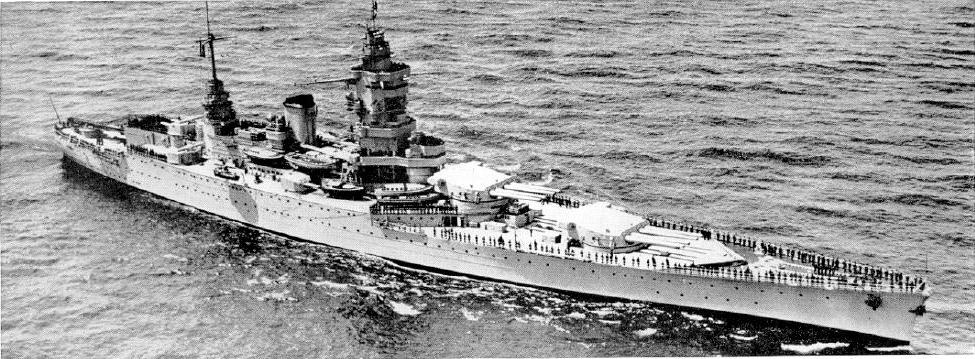

| Les Cuirasses | |||
|---|---|---|---|
|  | Classe Bretagne, Bretagne |
La Bretagne était un cuirassé français de la classe Bretagne, en service durant les Première et Seconde Guerre mondiale. Mis en service en 1915, il est coulé lors de l'attaque britannique sur Mers el-Kébir le 3 juillet 1940. La classe Bretagne est issue de la loi-programme du 30 mars 1912. Le texte était ambitieux, qui visait à fixer la flotte à vingt-huit cuirassés, dix éclaireurs d’escadre, cinquante-deux torpilleurs dits de « haute-mer », dix bâtiments pour divisions lointaines et quatre-vingt quatorze sous-marins. Elle est touchée par quatre obus de 381 mm en provenance des cuirassés Hood, Resolution et Valiant. Les deux premiers projectiles frappent en même temps à 16h59 (heure française), peu après la mise en route des moteurs, lors de la troisième salve de l'escadre britannique. Le navire atteint une gite de 40° à tribord et prend l'eau par l'arrière lorsqu'à 17h06, les deux derniers obus frappent le cuirassé, cette fois au centre. Le troisième impact a lieu au niveau de le tourelle n°3 et le quatrième à hauteur du mât avant incendiant les projectiles anti-aérien, stockés à proximité des pièces de 75mm. Trois minutes après, une explosion, interne, secoue à nouveau la Bretagne , dont la gîte augmente subitement avant qu'elle ne chavire sur tribord en quelques secondes. Une tentative de renflouage sera faite par la société de Matériel Naval du Midi fin 1942, mais qui sera interrompu après l'explosion d'une munition ayant blessé grièvement un scaphandrier. L'état du cuirassé empêche tout renflouement autre que dans l'objectif de libérer la rade. Son épave a été renflouée par la société Serra Frères en 1952, puis démolie jusqu'au 21 décembre 1954. |
Longueur : 166 m Maître-bau : 27 m Tirant d'eau : 9,80 m Déplacement : 23 500 tonnes Propulsion : Turbines Parsons à engrenage actionnant 4 hélices Puissance : 43 000 ch Vitesse : 21,5 nœuds (40 km/h) |
|  | Classe Courbet, Courbet |
Le Courbet est un cuirassé de la Marine française lancé en 1911, navire de tête de la classe du même nom. Il participe à la Première Guerre mondiale, passant la majorité du conflit en mer Méditerranée. Il est converti en navire-école d'artillerie durant l'entre-deux-guerres, avant d'être réarmé à la hâte lorsque la Seconde Guerre mondiale éclate. Saisi par les Britanniques à Portsmouth lors de l'opération Catapult, le navire sert de batterie antiaérienne flottante avant d'être désarmé et coulé comme brise-lames au large de Sword Beach peu après le débarquement, en 1944. |
Longueur : 158,5 m Maître-bau : 27 m Tirant d'eau : 9 m Déplacement : 23 500 t À pleine charge : 26 000 t Propulsion : 4 hélices 4 turbines à vapeur Parsons 26 chaudières Belleville Puissance : 28 000 ch Vitesse : 21,5 nœuds (39,8 km/h) |
|  | Classe Dunkerque, Dunkerque |
Le Dunkerque a été la première unité d'une classe de bâtiments de ligne français mise en service à la fin des années 1930, la classe Dunkerque. Sa principale caractéristique était de se situer nettement en deçà des limites posées par le traité de Washington de 1922, en termes de déplacement et de calibre de l'artillerie principale des cuirassés. Après les débarquements alliés en Afrique du Nord, au début novembre 1942, les Allemands occupent la Zone libre, et le 27 novembre 1942, ils font irruption dans l'arsenal de Toulon, pour s'emparer des navires français sous le contrôle de Vichy. La quasi-totalité des navires à quai sont sabordés par leurs équipages, dont le Dunkerque, en cale sèche dans les bassins Vauban, et le Strasbourg, amarré aux appontements de Milhaud, qui avait reçu, début 1942, un équipement de « détection électro-magnétique », premier radar français Le Dunkerque, tout comme le Strasbourg, est ensuite largement démantelé (tour, tourelles, étrave...), puis réduit à une carcasse d'environ 15.000 tonnes, que les bombardements alliés en août 1944 endommageront plus encore. Après la guerre, les deux navires seront relevés, vendus pour être enfin démantelés. |
Longueur : 214 mètres Maître-bau : 31 m Tirant d'eau : 8,5 m Déplacement : 26 500 tonnes (standard) 30 750 tonnes (normal) Propulsion : 6 chaudières Indret, 4 turbines Parsons, 4 hélices tripales Puissance : 130 000 ch Vitesse : 31 nœuds |
Retrouver la page complète sur Github UwU
Vous pouvez me contacter sur Discord via mon # = Alice(SaabniaTv)#0001 ou via mon serveur discord

{kind=link}
{kind=link}
{kind=link}